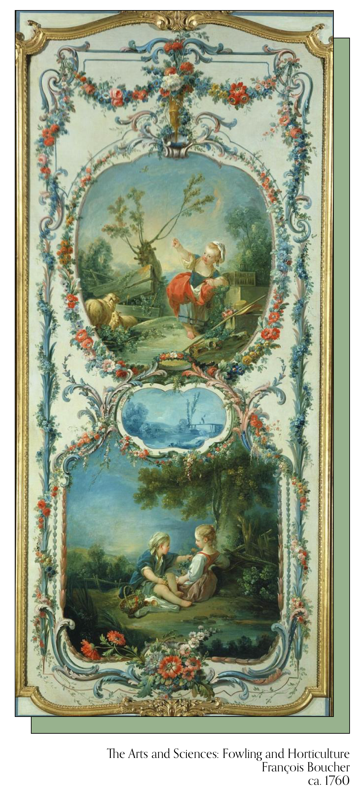
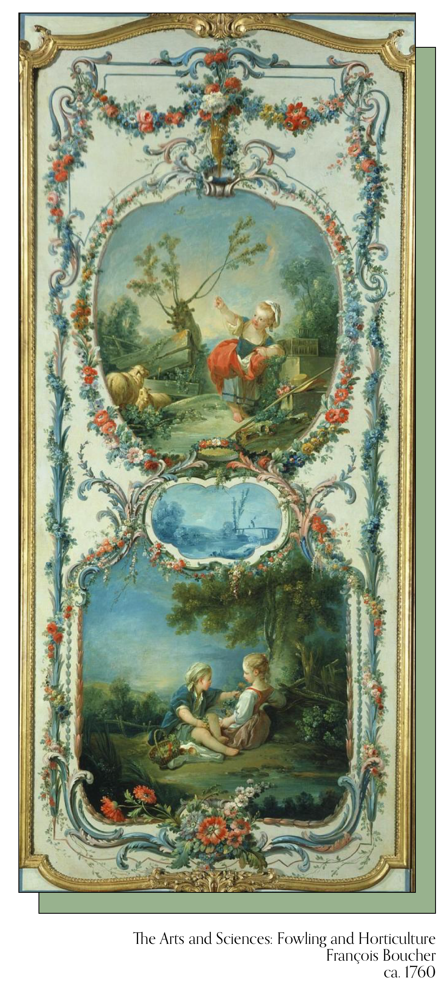

The Boucher Room was constructed by combining the former Ladies’ Dressing Room, part of the Butler’s Pantry, and the adjoining Silver Safe. After Mrs. Frick’s death in 1931, the panels and other decorative elements were moved to the present location from her boudoir located upstairs. This intimate chamber was designed around the eight canvases, long assumed to have been commissioned by Madame de Pompadour, mistress of Louis XV, but today believed to have been composed in the studio of her favorite painter, François Boucher, for an unknown patron.